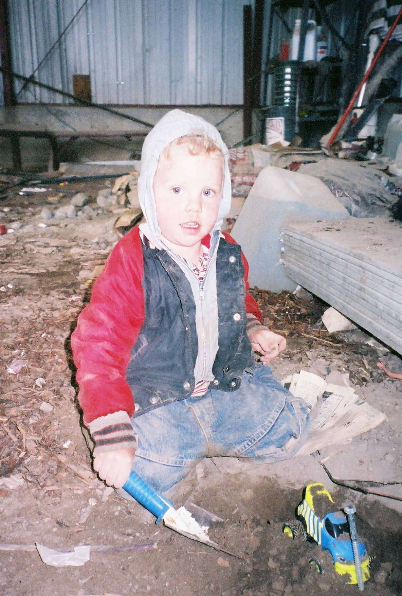
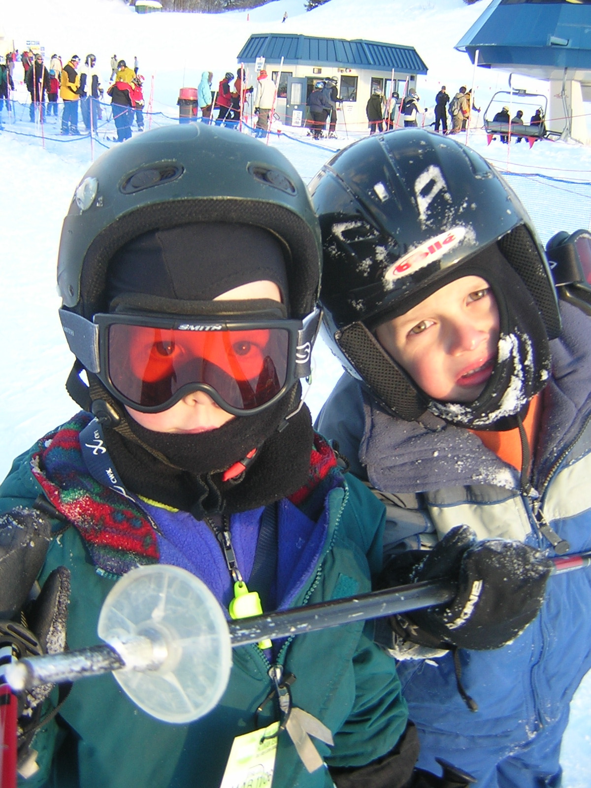
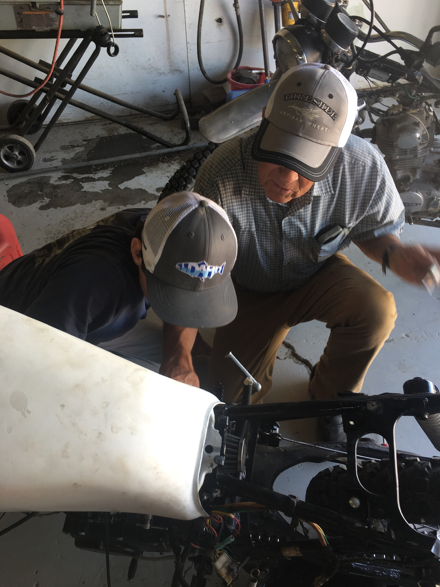

Throughout my life I have surrounded myself with experiences that have allowed me to grow. Hard skills and book smarts are essential, but I believe that profound learning comes from rolling up your sleeves and getting to work!
- Brigham Young University
- 2021-2025
- Economics Major
- Information Systems Minor
- Marketing Internship with Maverik
- Desert Hills Highschool
- 3.9 GPA
- Cross Country Team Captain
My Thoughts on Education
Any missionary who reads this will get me. If you didn't serve a mission, this will still be easy to follow.
I went to the MTC (mission training center) in Guatemala to learn spanish for 6 weeks before I went to El Salvador. I studied my guts out, memorized vocabulary on flashcards, rehersed scriptures for memorization, and read outloud in every spare moment for grammar.
Upon leaving the AC of the MTC, I found myself with a missionary companion who didn't speak a lick of english in rural Cuzcachapa. My first lesson as a missionary was sitting on a rickety stool teaching an inactive member family. Immedietly, I noticed that a 3 year old girl spoke better spanish than me. I got out my notepad and started jotting down new vocab. Within 2 days I had learned more than my entire time in the MTC.
I am not dismissing the fact that because I learned basic skills in the MTC, I was able to learn faster in the field. I am only stressing the importance of a balanced learning enviroment. Too many books is not a good thing. And application is hollow without knowledge.
So instead of writing 1000's of words about education that cant be categorized into my GPA, I'll let the pictures explain themselves.
 "Helping" durring our house renovation
 Cold days on the mountain with my cousin Braden
 Tinkering/working with Grandpa
Checking out a traditional climbing route in NV